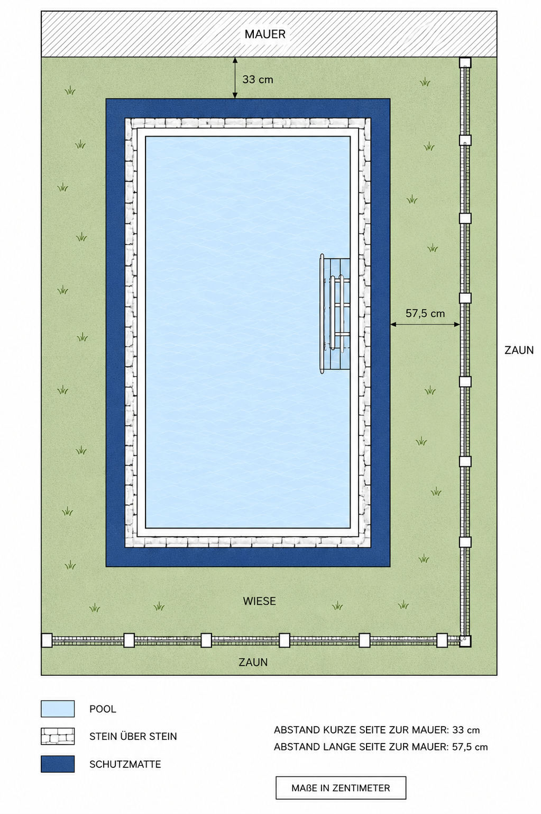
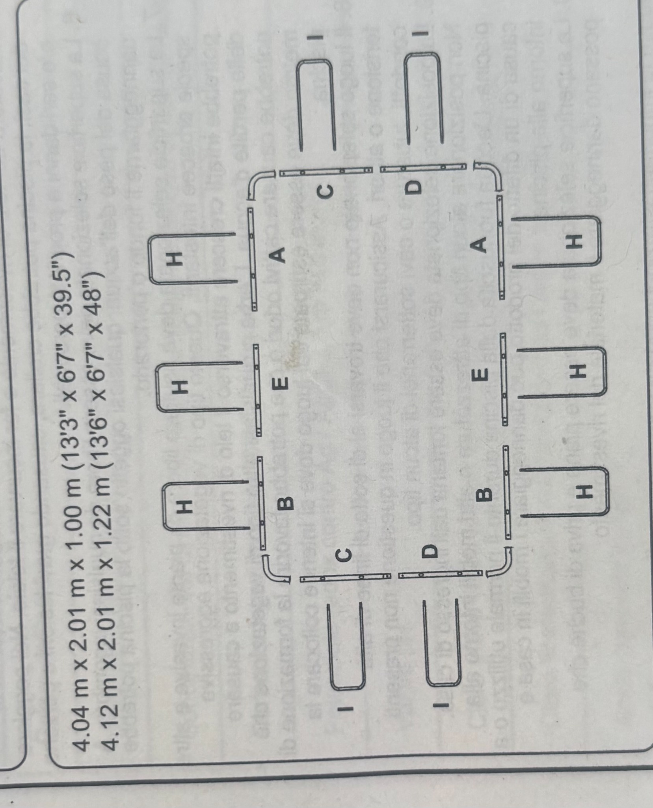
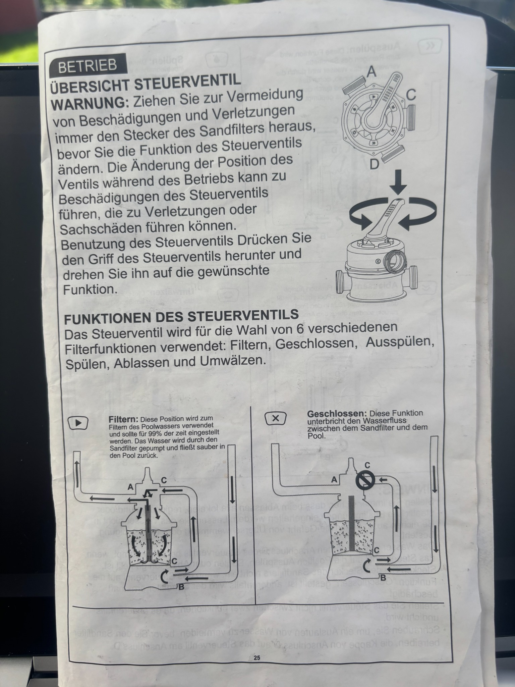
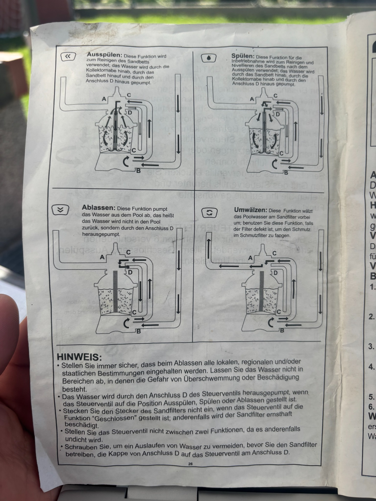

Pool-Plan

Stützenanordnung gemäß Herstellerplan

Sandfilterpumpe in Betrieb nehmen
Wichtig: Ventil nur umstellen, wenn die Pumpe ausgeschaltet ist. Pumpe niemals ohne Wasser laufen lassen.
- Pool mit Wasser füllen.
- Schläuche korrekt anschließen.
- Sandfilter mit geeignetem Filtermedium befüllen.
- Luft ablassen, bis Wasser aus Anschluss D kommt.
- Ventil auf Rückspülen / Ausspülen stellen.
- Pumpe 3–5 Minuten laufen lassen.
- Pumpe ausschalten.
- Ventil auf Spülen stellen.
- Pumpe ca. 1 Minute laufen lassen.
- Pumpe ausschalten.
- Ventil auf Filtern stellen.
- Pumpe einschalten. Jetzt läuft der normale Filterbetrieb.
Ventilfunktionen
| Funktion | Erklärung |
|---|---|
| Filtern | Normaler Betrieb. Wasser läuft durch den Sandfilter zurück in den Pool. |
| Geschlossen | Wasserfluss wird gestoppt. Nicht bei laufender Pumpe benutzen. |
| Ausspülen / Rückspülen | Filter wird gereinigt. Schmutzwasser läuft über Anschluss D heraus. |
| Spülen | Nach dem Rückspülen kurz spülen, damit sich das Sandbett setzt. |
| Ablassen | Wasser wird aus dem Pool abgepumpt. |
| Umwälzen | Wasser wird bewegt, aber nicht gefiltert. |
Bilder aus der Anleitung


